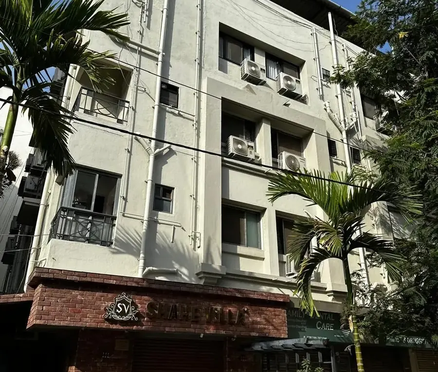
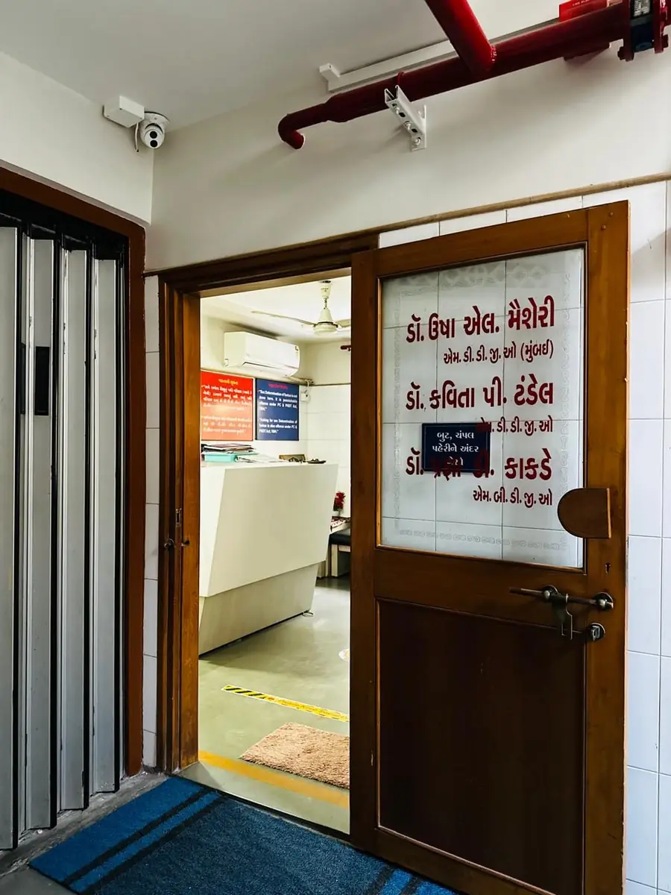
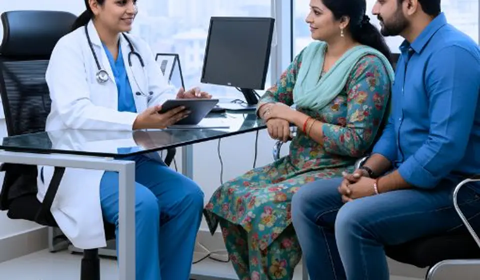
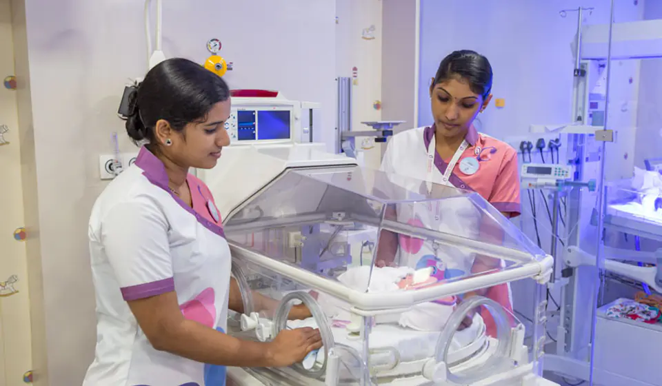

Centre 01
Maternity & Delivery
Complete pregnancy care with a fully equipped labour room and operation theatre — for normal as well as complicated deliveries, with 24 Hrs obstetric emergency support.
Explore maternity careVardhaman Hospital provides dedicated obstetric, gynaecological, fertility, newborn and pediatric care at Halar Cross Road, Valsad. Our clinical team supports patients through consultation, treatment, delivery and follow-up care with a steady, patient-first approach.



Vardhaman Hospital is a dedicated women's & children's hospital at Halar Cross Road, Valsad, led by senior obstetrician & gynaecologist Dr. Usha L. Meisheri (M.D., D.G.O. — Mumbai) and an experienced team of gynaecologists, a laparoscopic surgeon and a pediatrician.
With a fully equipped labour room, operation theatre, indoor & OPD facilities, NICU and phototherapy unit, we care for women at every stage of life — and for the newest members of your family too.
Vardhaman Hospital brings maternity, gynaecology, fertility and newborn care together under one roof.
Complete pregnancy care with a fully equipped labour room and operation theatre — for normal as well as complicated deliveries, with 24 Hrs obstetric emergency support.
Explore maternity care
Centre 02A dedicated infertility treatment centre with IUI, alongside a family planning centre, sonography and cancer detection centre — supporting every stage of your family's journey.
Explore fertility care
Centre 03NICU and phototherapy unit, a vaccination centre and dedicated pediatric consultation — with 24 Hrs pediatric emergency care for your little one, right from birth.
Explore child careFrom routine consultations to advanced laparoscopic surgery — modern facilities, experienced specialists and round-the-clock emergency care.
Consultation for menstrual health, pregnancy care, menopause, infections and other women's health concerns.
Safe deliveries in a fully equipped labour room, with expert obstetric support round the clock.
Hysterectomy (vaginal, abdominal & laparoscopic), diagnostic & operative laparoscopy, hysteroscopy and tubal ligation.
In-house sonography for pregnancy monitoring and gynaecological diagnosis.
A dedicated infertility treatment centre with IUI, guiding couples with care and expertise.
NICU, phototherapy unit, vaccination centre and pediatric consultation for children.
Helpful guidance for expecting mothers — pregnancy check-ups, preparing for delivery, care after surgery and newborn vaccination.
Gynaec, obstetric and pediatric emergency facilities available round the clock, every day.
Senior gynaecologists, a laparoscopic surgeon with 43 years of experience and a dedicated pediatrician.
Women's health services from adolescence and maternity care through menopause and preventive follow-up.
Labour room, operation theatre, indoor & OPD, NICU and phototherapy unit under one roof.
Early detection and screening for women's cancers — because timely diagnosis saves lives.
Complete vaccination services for newborns, children and women at every age.
Experienced doctors committed to compassionate, expert care for women and children.

M.D., D.G.O. (Mumbai)

M.D., D.G.O.

M.B., D.G.O. — 25 Years' Experience

M.B.B.S., M.S. — 43 Years' Experience

M.B.B.S., M.D., D.C.H.
Book your appointment by phone on +91 94269 23978 — appointments are on a first-come, first-served basis.
Doctor-wise consultation timings are available on the Contact page.
Our team is here to help. Book an appointment, schedule a video consultation or call us directly — we'll guide you through the next steps.